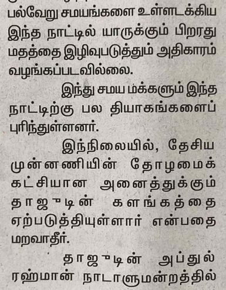
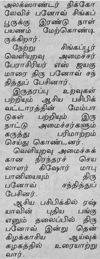
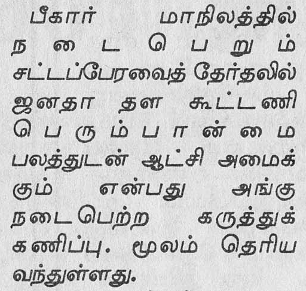
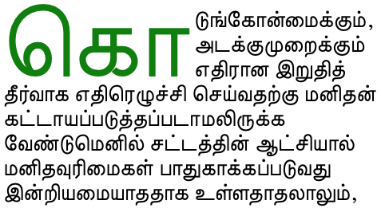
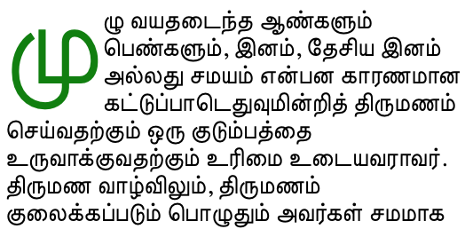
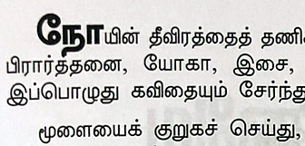

This page gathers together basic information about the Tamil script and its use for the Tamil language. It aims (generally) to provide an overview of the orthography and typographic features, and (specifically) to advise how to write Tamil using Unicode.
Tamil has a fairly complicated set of rules and variations on pronunciation, and the writing system abstracts away from the detail. Phonetic transcriptions on this page should be treated as an approximate guide, only. Many are more phonemic than phonetic, and there may be variations depending on the source of the transcription. For example, the symbol a represents a set of central sounds which may be written a, ə, or ʌ in more detailed transcriptions.
Select part of this sample text to show a list of characters, with links to more details.
உறுப்புரை 1 மனிதப் பிறிவியினர் சகலரும் சுதந்திரமாகவே பிறக்கின்றனர்; அவர்கள் மதிப்பிலும், உரிமைகளிலும் சமமானவர்கள், அவர்கள் நியாயத்தையும் மனச்சாட்சியையும் இயற்பண்பாகப் பெற்றவர்கள். அவர்கள் ஒருவருடனொருவர் சகோதர உணர்வுப் பாங்கில் நடந்துகொள்ளல் வேண்டும்.
உறுப்புரை 2 இனம், நிறம், பால், மொழி, மதம், அரசியல் அல்லது வேறு அபிப்பிராயமுடைமை, தேசிய அல்லது சமூகத் தோற்றம், ஆதனம், பிறப்பு அல்லது பிற அந்தஸ்து என்பன போன்ற எத்தகைய வேறுபாடுமின்றி, இப்பிரகடனத்தில் தரப்பட்டுள்ள எல்லா உரிமைகளுக்கும் சுதந்திரங்களுக்கும் எல்லோரும் உரித்துடையவராவர். மேலும், எவரும் அவருக்குரித்துள்ள நாட்டின் அல்லது ஆள்புலத்தின் அரசியல், நியாயாதிக்க அல்லது நாட்டிடை அந்தஸ்தின் அடிப்படையில் — அது தனியாட்சி நாடாக, நம்பிக்கைப் பொறுப்பு நாடாக, தன்னாட்சியற்ற நாடாக அல்லது இறைமை வேறேதேனும் வகையில் மட்டப்படுத்தப்பட்ட நாடாக இருப்பினுஞ்சரி — வேறுபாடெதுவும் காட்டப்படுதலாகாது.
Usage & history
The Tamil script is used for writing the Tamil language, a Dravidian language spoken by over 65,500,000 people in India, Sri Lanka, Singapore, Malaysia and Mauritius. Tamil is an official language in the south Indian state of Tamil Nadu as well as in Sri Lanka and Malaysia. It is also used to write the liturgical language Sanskrit, using consonants and diacritics not represented in the Tamil alphabet. Certain minority languages such as Saurashtra, Badaga, Irula, and Paniya are also written in the Tamil script.
Name: தமிழ் அரிச்சுவடிt̪ɐmɨɻ ˈɐɾit͡ɕːuʋəɽi
An old Tamil script derived from Brahmi, and dates back to the Ashokan period, however this differs in various significant ways from the modern script, which evolved from a new script created during the 6th century Pallava dynasty. It took around 500 years for this new script to spread throughout the Tamil regions. Orthographic reform in the 19th and 20th centuries simplified and regularised the script, removing many ligated forms, to facilitate typesetting.
The script was reformed in the 19th century to make it easier to typeset, and again in the 20th. The advent of printing also brought back the use of the pulli to denote consonants without an inherent vowel, since the difficulty of using such on palm leaves made it become rare.w
In 1978, in an attempt to simplify the script, the government of Tamil Nadu proposed the reform of certain letters and syllables. See writing_styles for details.
These reforms only spread in India and the digital world, whereas Sri Lanka, Singapore, Malaysia, Mauritius, Reunion and other Tamil speaking regions continue to use the traditional syllables.ws
The Tamil script is an abugida, ie. consonants carry an inherent vowel sound that is overridden using vowel-signs. See the table to the right for a brief overview of features for the modern Tamil orthography. (See the key. Character counts exclude ASCII characters.)
There can be differences in letter shapes and other typographic approaches between the Tamil used in India and that used in places like Singapore and Malaysia (and even Sri Lanka).
The following list describes some distinctive characteristics of the Tamil script.
There are fewer consonants than in other Indic scripts. Tamil has no aspirated consonant letters, and symbols are allocated on a phonemic basis, rather than phonetic. This means that க, for example, may be pronounced as the allophones kɡxɣ or h, according to where it appears relative to other sounds in a word, but its pronunciation doesn't change the word.
Tamil is diglossic: the classic form is preferred for writing and public speaking, and is mostly standard across the Tamil-speaking regions; the colloquial, spoken form differs widely from the written.
There are only two conjunct forms in use (although one of those has two alternative spellings). Normally Tamil indicates consonant clusters using a visible virama, called pulli.
Text direction
The Tamil script is written horizontally, left to right.
Structure
Tamil has a very restricted set of consonant clusters, and no word-initial clusters.wp Geminated consonants, however, are common.
Some consonants cannot begin a word (eg. ɾ ɻ l) and others cannot appear at the end.w
The following tables show how the above vowel sounds map to characters or sequences of characters. Both dependent vowel-signs (d) and independent vowels (i) are shown.
Danielsd describes the inherent vowel as ʌ, though not consistently.
Vowel-signs
Other than the inherent vowel, vowel sounds that follow a consonant sound are represented using vowel-signs, eg. கீkīkiː. This includes the 2 diphthongs (each represented by a single code point), 3 prescript signs, and 3 circumgraphs.
ி␣ீ␣ு␣ூ␣ெ␣ே␣ொ␣ோ␣ா␣ ␣ை␣ௌ
Tamil vowel-signs are all combining characters. In principle a single Unicode character is used per base consonant, even if the vowel-signs appear on both sides of the base consonant, however, see also alt_vowels. All vowel-signs are typed and stored after the base consonant, and the font puts them in the correct place for display.
All but one vowel-signs are spacing combining characters, ie. they expand the text width when applied to a consonant.
The u and ū vowel-signs, and to some extent the i and ī signs, tend to form ligatures with the base consonant. See vowelligation.
The single code point per vowel-sign, is the preferred form and the form in common use for Tamil. The parts are separated, however, in Unicode Normalisation Form D.
Alternate code point sequences for vowel-signs that surround the base.
Whichever approach you use, the vowel-signs must be typed and stored after the consonant or consonant cluster that they surround. In the case of multi-character vowel-signs, the order is also important and must be as shown above.
Vowel-sign placement
The following list summarises where vowel-signs are positioned around a base consonant to produce vowels, and how many instances of that pattern there are.
3 prescript, eg. கெke
4 postscript, eg. கூkū
1 superscript, eg. கீkī
3 pre+postscript, eg. கௌkʌʷ
However, some of the vowel signs are tightly integrated with the consonant shape. See vowelligation.
Vowel ligatures
Vowel-signs for u and uː, and to some extent i and i:, produce significantly different, ligated shapes as they combine with the base consonant. The figure below shows the various alternative shapes produced by ◌ு[U+0BC1 TAMIL VOWEL SIGN U], when combined with different base characters.
Besides these significant transformations, special shaping is used to ensure a clean join between the consonant and vowel, eg. லிli, or ஷிʂi, where the vowel-sign is stretched slightly to fit the shape of the consonant.
A reform in 1978 by the Tamil Nadu government changed the shapes and relative positions of certain consonant+vowel-sign combinations in India, though not necessarily in other locations. See variants for a list of shape differences.
Expand the text just below for a table shapes arising from consonant+vowel combinations in Tamil.
Show all consonant+vowel combinations
Reminder: You can test different fonts on your system using the blue bar to the right.
Vowel absence
Tamil uses ் [U+0BCD TAMIL SIGN VIRAMA] (called puḷḷi in Tamil) to kill the inherent vowel after a consonant, eg. க்k͓ explicitly represents just the sound k.
The pulli tends to be visible anywhere the vowel is dropped. For example, unlike Devanagari, it is used at the end of a word if there is no final vowel, eg. மனிதப்mnitpmənid̪əphuman.
Standalone vowels
Tamil represents syllable-initial vowels using a set of independent vowel letters.
இ␣ஈ␣உ␣ஊ␣எ␣ஏ␣ஒ␣ஓ␣அ␣ஆ␣ ␣ஐ␣ஔ
Independent vowel forms used to be used at the beginning of metrical groups, but now they are used at the beginning of a word, eg. இந்தịṅt(inta)this, but also internally to represent 'overlong' vowel sounds, eg. compare பெரீயpeɾīy(perīya)really big and பெரீஇஇயpeɾīịịy(perīiiya)reeeeally big.
Consonants
Consonant sounds
labial
dental
alveolar
post-
alveolar
retroflex
palatal
velar
glottal
stop
pb
t̪d̪
ʈɖ
kɡ
affricate
t͡ʃd͡ʒ
fricative
f β
ð
sz
ʃʒ
ʂ
xɣ
h
nasal
m
n̪
n
ɳ
ɲ
ŋ
approximant
ʋ
l
ɻɭ
j
trill/flap
rɾ
ɽ
Sourcewp. Lighter coloured sounds are non-native or allophones.
The Tamil writing system only represents phonemic differences. The sounds in parentheses in the chart are allophonic variations or sounds used for foreign words. Allophonic variants are not usually indicated in Latin transcriptions.
Plosives are unvoiced if they occur word-initially or doubled. Elsewhere they are voiced, with a few becoming fricatives intervocalically. Nasals and approximants are always voiced.
Wikipedia provides the following useful table for the realisation of the plosive sounds in context.
The consonants are classified into three categories: vallinam (hard consonants), mellinam (soft consonants, including all nasals), and idayinam (medium consonants). These categories are important for the rules of pronunciation.
The mapping of consonants, in particular the plosives, to phonetic sounds is particularly varied for an indic script. These rules for the pronunciation of consonants for the written form of Tamil make for complementary distribution. However, the rules break down to varying degrees when dealing with Sanskrit loan words and the colloquial spoken form of Tamil (particularly in northern areas). For more read Tamil phonology and Krishnamurthi23-28.
initial, eg. பத்து
geminated, eg. அப்பன், விற்பனை.
b
ப [U+0BAA TAMIL LETTER PA] when:
between vowels, eg. ஆபத்துạ̄pt͓tuɑːbət̪t̪ʉdanger
after a nasal, eg. அன்புạn͓puənbʉlove.
t̪
த [U+0BA4 TAMIL LETTER TA] when:
initial, eg. தனிtnit̪ənɪˑseparate,
geminated, eg. பத்துpt͓tupət̪t̪ʉten, or
after a stop, eg. யுக்திyuk͓tijʉkt̪ɪˑtactical.
ற [U+0BB1 TAMIL LETTER RRA] inserted when this letter is geminated after a nasal, eg. பற்றிpr͓ripət̺t̺ʳɪˑabout.
ம [U+0BAE TAMIL LETTER MA], when:
initial,
eg. மலைmlaʲmələjmountain,
geminated, eg.
அம்மாள்ạm͓māɭ͓əmmɑːɭmummy,
in a cluster, eg.
தம்பிtm͓pit̪əmbɪˑbrother,
finally, eg.
வண்ணம்ʋɳ͓ɳm͓ʋəɳɳəmcolour.
ண [U+0BA3 TAMIL LETTER NNA], when:
in a cluster,
eg. வண்டி,
geminated, eg.
வண்ணம்ʋɳ͓ɳm͓ʋəɳɳəmcolour.
ɲ
ஞ [U+0B9E TAMIL LETTER NYA] when:
initial,
eg. ஞானம்ɲānm͓ɲɑːnəmwisdom,
geminated, eg.
அஞ்ஞானம்ạɲ͓ɲānm͓əɲɲɑːnəmfineness,
in a cluster, eg.
இஞ்சிịɲ͓ciʲɪɲd͡ʒɪˑginger.
The basic consonant sounds of the standard Tamil alphabet are represented by the following characters. Note that there are no consonants dedicated only to voiced stops or to fricative sounds.
ப␣த␣ச␣ட␣கம␣ந␣ன␣ண␣ஞ␣ஙவ␣ர␣ற␣ழ␣ல␣ள␣ய
The list of plosives above uses hyphens to provide information about the context in which allophonic variants are used (see fig_allophone_table).
Grantha consonants
Because the core set of Tamil consonants is quite a lot smaller than that of most indic scripts, Tamil adds additional letters from the Grantha script to cover sounds in Sanskrit and English, and complete the basic consonant set.
ஜ␣ஸ␣ஶ␣ஷ␣ஹ␣க்ஷ
The last item in the list just above is actually a cluster of two consonants, but is viewed as a single letter of the alphabet.
For compatability with modern communication, Tamil presses into service ஃ[U+0B83 TAMIL SIGN VISARGA] (called āytam) to produce fricative sounds from stops.
Note that a vowel-sign can occur between the visarga and the other consonant – ie. the two are not treated as an indivisible unit, eg. ஃபோரியர்ˑpōɾiyɾ͓foːɾɪjər
Fourier.
Other extension mechanisms
Superscript numbers
The Unicode Standard describes a method of extension that uses superscript or subscript digits, particularly to represent missing letters in transcriptions of languages such as Sanskrit and Saurashtra. Each number represents the sound that is unvoiced, unvoiced-aspirated, voiced, or voiced-aspirated, respectively, eg. ப¹ = pa, ப² = pha, ப³ = ba, and ப⁴ = bha.u306
Example of superscript numbers being used for allophone disambiguation.
Grantha script
The Grantha script is often also used by Tamil speakers to write Sanskrit because Grantha contains these missing consonants.u306
Minority languages
A number of minority languages use a nukta symbol to indentify sounds for that language. The shape of the nukta can vary. It always appears below the character, and the shape is most commonly a single dot below the letter (as or Chetti), a small open circle (as in Betta Kurumba), or 2 dots side-by-side (as in Irula). The code to use for such nuktas is 𑌻 [U+1133B COMBINING BINDU BELOW].
Final consonants
Syllable-/word-final consonants in Tamil are just written using ordinary consonants with the pulli overhead, eg. தமிழ்tmiɻ͓(tamiḻ)Tamil.
Consonant clusters
Rather than using conjunct glyphs like most other indic scripts, consonant clusters are normally represented using the puḷḷi dot over the character(s) that are not followed by a vowel, eg. தீர்ப்புtīɾ͓p͓puverdict.
There are two common exceptions: க்ஷk͓ʂkʃʌ and ஶ்ரீʃɾīʃri.
Representation of shrī
The syllable ʃri can be written with two different initial letters: ஶ [U+0BB6 TAMIL LETTER SHA] (ie. ஶ்ரீʃɾī) or ஸ [U+0BB8 TAMIL LETTER SA] (ie.ஸ்ரீs͓ɾī). The result looks identical. Since 2005, the Unicode Consortium has recommended use of the former, but both are still in wide circulation, so Unicode 12 recommends that both be treated as equivalent sequences.u493-4
Named character sequences
Tamil speakers tend to think of grapheme clusters containing consonant+vowel as a single entity. In some cases, people want to process Tamil using these grapheme clusters as a single unit.
To assist with this Unicode provides named character sequences that apply standardised names to whole syllables. These can then be mapped to the private use area for applications wanting to work with Tamil in this way. For normal Tamil data interchange, however, the standard codepoints should be used.u496
Combining marks
Vowel signs
The following vowel-signs are discussed in vowelsummary.
ி␣ீ␣ு␣ூ␣ெ␣ே␣ொ␣ோ␣ா␣ ␣ை␣ௌ
Other marks
Tamil uses the following additional combining marks.
OM is a religious concept found in all three major religions born in India viz. Hinduism, Jainism and Buddhism. ௐ [U+0BD0 TAMIL OM] is widely used in Hindu religious texts, temple publications, and as neon lamps of sign boards in shops etc.
ௐ
The remaining symbols in the Unicode Tamil block are rarely, if ever, used in modern Tamil content.
Unicode version 12 added the Tamil Supplement block. This contains numbers, symbols, and one punctuation mark that are not normally used in modern Tamil, although a few are sometimes used in traditional formats, such as wedding invitations.u496
The number characters are for fractions, and the symbols include measures of grain, old currency symbols, symbols of weight, length, and area, agricultural symbols, clerical symbols, and other symbols and abbreviations. The punctuation marks the end of a text.
There is a set of Tamil numbers, but modern Tamil text uses Western digits.
The CLDR standard-decimal pattern is #,##,##0.###. The standard-percent pattern is #,##,##0%.c
An interesting feature of large numbers written in India is that they apply groupings of two, rather than three, digits between commas (even when using european digits).
20,00,000
Two million, written with Indian comma separators.
Archaic digits & symbols
The Tamil digits can be used as a standard decimal counting system, but older versions of the Tamil system had no zero and inserted characters to indicate tens, hundreds, and thousands.
The number 1,234 using the old Tamil numbering system.
The following signs were formerly used with numbers.
௺␣௶␣௷␣வ␣%
Currency
The CLDR standard format for currency is ¤ #,##,##0.00, and the Indian currency symbol is ₹ [U+20B9 INDIAN RUPEE SIGN]c. The latter sign was introduced by the Indian government in 2010.
The Tamil rupee sign used to indicate a sum of 6,000 rupees.
The Tamil rupee sign is distinguished from ₨ [U+20A8 RUPEE SIGN], which is an older symbol not formally tied to any particular currency.u Follow that link for more information about the rupee.
Dates
The following signs were formerly used for dates.
௳␣௴␣௵␣ள
Glyph shaping & positioning
Tamil doesn't appear to have any features relevant to cursive text, baselines & inline alignment, or character transforms.
The fonts used in this article apply the simplifications introduced for most of the characters in that reform, apart from the first two in the list above, which have not been widely adopted.
These reforms only spread in India and the digital world, whereas Sri Lanka, Singapore, Malaysia, Mauritius, Reunion and other Tamil speaking regions continue to use the traditional syllables.ws
Context-based shaping
Although modern Tamil uses fewer conjunct ligatures than most other indic scripts, many ligatures are still needed for a Tamil font, mostly for combinations of base consonant and vowel-sign. See vowelligation.
Shaping RA. In certain contexts, ர [U+0BB0 TAMIL LETTER RA] may look identical to ா [U+0BBE TAMIL VOWEL SIGN AA] in some fonts, or may have a short tail in others. These letters looked the same in old manuscripts, especially palm leaves, and in early printed materials. The stroke was introduced by Father Beschi to differentiate the two, but only if it didn't have a vowel-sign or pulli attached, so ரா, ரெ, ரோ, etc. carried a stroke, but not ர், ரி and ரீ. This approach is still followed, particularly in India, but in Malaysia and Singapore, there is a government regulation requiring the use of the form with a bottom stroke in all contexts. People are comfortable with both forms and will hardly notice the difference.m
fig_ra_variants shows a text that distinguishes between the two variant glyphs. Compare the items circled in red. The orange circle indicates a vowel-sign that would be ambiguous if one was not expecting a tail for the consonant.
Observation: Tamil consonants tend to all be the same height, and so the vertical positioning of the pulli tends to be the same. Otherwise, apart from the vowel-signs and pulli, Tamil doesn't really have combining characters.
Observation: The only time Tamil has multiple combining marks attached to the same base character is when decomposed multi-part vowel-signs are used, see alt_vowels.
Font styles
Italics and bold are not traditional features of Tamil text.i
Some fonts have upright glyphs, whereas others have slightly slanted glyphs.
Observation:Panels of text in a Tamil newspaper that uses fonts that are more slanted than normal. Could this be an italic font face? Note that all the body text of the panel uses that font. There appear to be no instances where italic-looking fonts are applied to inline text. Other fonts used for the body text in other articles tended to also have a slight lean, though not as much. The verticals in headings tend to be upright.
Structural boundaries & markers
Grapheme boundaries
With 3 exceptions, modern Tamil doesn't use conjuncts to represent consonant clusters. Instead, it uses a visible pulli over the characters without an inherent vowel. The basic typographic unit is therefore equivalent to a Unicode grapheme cluster, ie. a base character followed by combining character(s).
This also means that, in a consonant cluster, a prescript vowel is displayed immediately to the left of the consonant it follows, rather than at the beginning of the cluster (see the sequence ற்றைr͓rʌʲ in fig_yavattaiyum).
யாவற்றையும்
Grapheme boundaries in a word with consonant clusters.
Note, however, that typographic units used for justification and word stretching are based on glyph boundaries, rather than grapheme clusters. See justification.
Conjuncts. The exceptions are the sequences க்ஷk͓ʂ, and ஶ்ரீʃ͓ɾī / ஸ்ரீs͓ɾī (the latter two being alternate ways of writing the same sound). These sequences should not be broken during segmentation. Note, that the 'shri' sequence must include the i vowel to produce a conjunct. With a different vowel, the sequence of characters is displayed using a visual pulli, eg. இஶ்ரேல்ịʃ͓ɾēl͓Israel.
Correct segmentation of these conjunct-forming sequences are not supported by default by Unicode grapheme clusters (which split them in two), and requires the application of tailored rules.
Word boundaries
Words are separated by spaces.
Phrase & section boundaries
Western punctuation is used generally.
For separators at the sentence level and below, the following are used in Tamil language text.
The default quote marks for Tamil are “ [U+201C LEFT DOUBLE QUOTATION MARK] at the start, and ” [U+201D RIGHT DOUBLE QUOTATION MARK] at the end.c
When an additional quote is embedded within the first, the quote marks are ‘ [U+2018 LEFT SINGLE QUOTATION MARK] and ’ [U+2019 RIGHT SINGLE QUOTATION MARK].c
Emphasis
tbd
Underlining is not a traditional feature of Tamil text.i
One way to express emphasis is to elongate vowel sounds using extra independent vowels, eg. compare பெரீயpeɾīy(perīya)really big and பெரீஇஇயpeɾīịịy(perīiiya)reeeeally big.
Abbreviation, ellipsis & repetition
tbd
Other punctuation
tbd
Inline notes & annotations
tbd
Line & paragraph layout
Line breaking
Tamil is preferably wrapped at word boundaries, however Tamil words can be long, leaving large gaps during justification, so it is possible to hyphenate words.
Hyphenation
Because of the length of Tamil words, hyphenation is useful during layout, but it isn't easy to do because of the complexity of Tamil words.
Hyphenation must take place at syllable boundaries. A hyphen is added at the end of the line when a word is hyphenated.
Prabhakarp proposes rules that single characters should be avoided at line start/end, especially characters with nukta at line start, and a word with 5 characters including 3 consecutive consonants can't be split. He says that due to the fact that Tamil is highly inflexional, morphological or pattern based approaches are needed, rather than simple dictionary lookup.
Line-edge rules
According to ilreq, a line should not start with any of the following characters.
,␣.␣:␣;␣।␣॥␣)␣]␣}␣>␣+␣*␣/␣=␣_␣|␣~␣%
Line breaking should also not move a danda or double danda to the beginning of a new line, even if they are preceded by a space character. These punctuation characters should behave in the same way as a full stop does in English text.
Presumably, similar rules apply for the end of a line.
Character properties
Characters used for the Tamil language have the following assignments related to line-break properties.
AL
47
ஃ அ ஆ இ ஈ உ ஊ எ ஏ ஐ ஒ ஓ ஔ க ங ச ஜ ஞ ட ண த ந ன ப ம ய ர ற ல ள ழ வ ஶ ஷ ஸ ஹ ௐ ௰ ௱ ௲ ௳ ௴ ௵ ௶ ௷ ௸ ௺
AL (ordinary alphabetic and symbol characters) requires other characters to provide break opportunities; otherwise, unless tailored rules are applied, no line breaks are allowed between pairs of them.
BA (break after) indicates that it is normal to break after that character.
IN (inseparable characters) is intended to be used consecutively. There is never a line break between two characters of this class.
IS (infix numeric separators) usually occurs inside a numerical expression and may not be separated from the numeric characters that follow, unless a space character intervenes. For example, there is no break in “100.00” or “10,000”, nor in “12:59”..
NU (number) behaves like ordinary characters (AL) in the context of most characters but activate the prefix and postfix behavior of prefix and postfix characters.
PO (postfix numeric) usually follows a numerical expression and may not be separated from preceding numeric characters or preceding closing characters, even if one or more space characters intervene. For example, there is no break opportunity in “(12.00) %”..
PR (numeric prefix) may not be separated from following numeric characters or following opening characters, even if a space character intervenes. For example, there is no break opportunity in “฿ (100.00)”.
QU (quotation) characters can be opening or closing, or even both, depending on usage. The default is to treat them as both opening and closing.
Text alignment & justification
Justification
Tamil usually adjusts inter-word spacing in order to justify text on a line.
Justification can be helped significantly by hyphenating the text, although this isn't easy for Tamil (see hyphenation).
A workaround, in the absence of word-breaking, is to mitigate by adjusting inter-character spaces, especially when only a single word fits on a line.gfig_justification_in_newsprint shows examples of inter-character space being compacted and stretched to minimise inter-word gaps.

Newspaper clipping showing inter-character compaction and stretching.
Justification in narrow columns.Due to the length of Tamil words, justification can sometimes lead to large gaps between words in narrow columns (see fig_justification_gaps).

A narrow column in newsprint with large gaps between justified words on a line.
If only a single word fits on a line, it is common practise to stretch the inter-character spacing so that the word fills the line, eg. the word பெரும்பான்மைpeɾum͓pɑ̄n͓mʌʲ(perumpāṉmai)majority in fig_justification_one_word.

Examples of a single word stretched to fill a line.
Observation: In the sources examined, when stretching inter-character spacing in this way equal amounts of space are added, not between characters, but between unconnected glyphs. This includes stretching the space between vowel-sign glyphs and their base consonant. (See, for example, the separation of ப and ெ in fig_justification_one_word.) This includes combinations such as ஜுʤu (see fig_justification_in_newsprint), but vowel-signs that are ligated with their base, such as கிki in கிராமப்புறங்கலில் are not separated. The pulli also remains above the base.
Observation: Where the word being stretched across a whole line is the last word in the sentence, it appears that the sentence-final punctuation also participates in the letter-spacing (see fig_justification_full_stop).
Full stop participating in the letter-spacing when a single word is stretched to fill a line.
Use the control below to see how your browser justifies the text sample here.
உறுப்புரை 7 எல்லோரும் சட்டத்தின் முன்னர் சமமானவர்கள். பாரபட்சம் எதுவுமின்றிச் சட்டத்தின் சமமான பாதுகாப்புக்கும் உரித்துடையவர்கள். இப்பிரகடனத்தை மீறிப் புரியப்பட்ட பாரபட்சம் எதற்கேனும் எதிராகவும் அத்தகைய பாரபட்சம் காட்டுவதற்கான தூண்டுதல் யாதொன்றிற்கும் எதிராகவும் எல்லோரும் சமமான பாதுகாப்புக்கு உரித்துடையவர்கள்.
Paragraph indents
Paragraph features are the same as in English. Paragraphs can start with or without indents.g
Letter spacing
tbd
Counters, lists, etc.
Tamil uses western numbering systems for lists.
However, there are also some native Tamil counter styles. Ready-made Counter Styles list 2 counter styles for use with the Tamil language: one numeric and one additive. You can experiment with these styles using the Counter styles converter.
1
2
3
4
tamil
(numeric)
௧
௨
௩
௪
ancient-tamil
(additive)
௧
௨
௩
௪
11
22
33
44
tamil
(numeric)
௧௧
௨௨
௩௩
௪௪
ancient-tamil
(additive)
௰௧
௨௰௨
௩௰௩
௪௰௪
111
222
333
444
tamil
(numeric)
௧௧௧
௨௨௨
௩௩௩
௪௪௪
ancient-tamil
(additive)
௱௰௧
௨௱௨௰௨
௩௱௩௰௩
௪௱௪௰௪
Comparative counters produced by Tamil counter styles.
Numeric
The tamil numeric style for Tamil is decimal-based and uses the digits below.
௦␣௧␣௨␣௩␣௪␣௫␣௬␣௭␣௮␣௯
Additive
The ancient-tamil additive style uses the numbers below. It is specified for a range between 1 and 9,999.
Alphabetic counters are seen, but are not very common.g See an example. It is not clear whether the counters extend beyond the vowel range.
Styling initials
It is possible to find the first letter in a paragraph styled in a distinctive way – usually larger and dropping down from the top of the first line. Some rules for positioning south Indian scripts are proposed by [ilreq].
Initials should not just include the first character on the line, but should include any associated combining characters. If the first character is the beginning of the sequences க்ஷk͓ʂ, and ஶ்ரீʃ͓ɾī/ஸ்ரீs͓ɾī, all of the characters making up the conjunct should be included in the styling. See an example of a highlighted syllable in fig_drop_caps.
Any punctuation such as opening quotes and opening parentheses should also be included in the initial styling.
Indian languages generally use the drop style or a boxed letter. Contour-filling is not needed for Indian text.i
 
Two example paragraphs showing dropped highlighted initials.
For the drop style, the alphabetic baseline of the highlighted letter(s) should match the bottom of the row that determines the size of the highlighted letter(s). In box examples in fig_drop_caps the highlighted text is set to 3 lines in height. In the second example, the highlighted text descends below the baseline, so an extra line is cleared to accommodate it. The tall vowel-sign in the first example rises slightly higher than the normal character height, and slightly exceeds the height of the first line of text.
The exact positioning of the normal character height relative to the characters in the rest of the first line needs further research. The examples in fig_drop_caps show the default result for the Safari browser.
For the raised style of initial, the highlighted characters sit on the same baseline as the first line of the paragraph, but rise above it (see fig_raised_initial). The inter-line spacing needs to accommodate any descenders.

Example of a raised highlighted initial.
Another common approach in Indic text is to create a box around the enlarged letter(s), often with a background colour. In this case the box dimensions are associated with the other lines in the paragraph, and the highlighted letters float within the box.
Page & book layout
General page layout & progression
tbd
Grids & tables
tbd
Notes, footnotes, etc
tbd
Forms & user interaction
tbd
Page numbering, running headers, etc
tbd
Character lists
Version 12.0 of the Unicode Standard has the following blocks dedicated to the Tamil script (numbers in lists are non-ASCII only):
Tamil Supplement21 numbers, 1 punctuation, 29 symbols : total 51
The following links give information about characters used for languages associated with this script. The numbers in parentheses are for non-ASCII characters.
The modern Tamil orthography described here uses characters from the following Unicode blocks.
General Punctuation
4
‘ ’ “ ”
Tamil
50
ஃ அ ஆ இ ஈ உ ஊ எ ஏ ஐ ஒ ஓ ஔ க ங ச ஜ ஞ ட ண த ந ன ப ம ய ர ற ல ள ழ வ ஶ ஷ ஸ ஹ ா ி ீ ு ூ ெ ே ை ொ ோ ௌ ் ௗ ௹
The infrequently used characters come from these blocks.